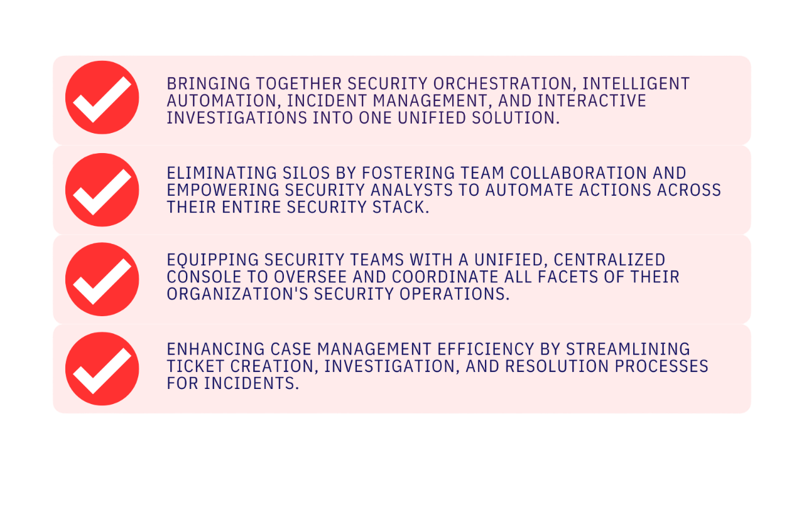
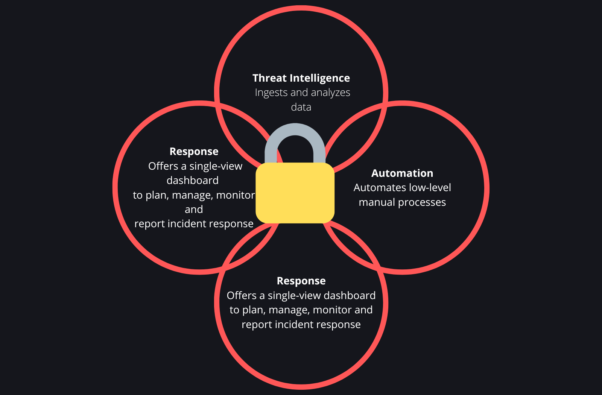
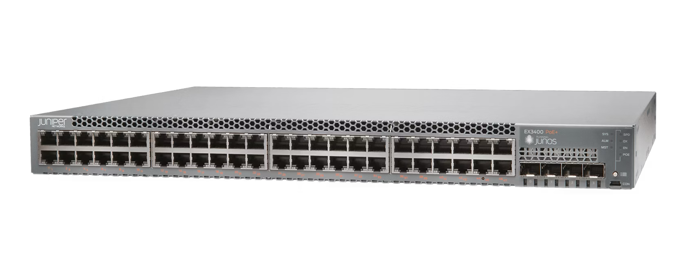

What is Log Management?
Organizations produce vast amounts of log data and events from applications, networks, systems, and users. Managing this data requires a systematic process to oversee and monitor disparate log files. Log management involves the continuous process of centrally collecting, parsing, storing, analyzing, and disposing of data to provide actionable insights, which support troubleshooting, performance enhancement, and security monitoring.
What is a log file?
Log files are computer-generated data files that serve as a primary data source for information related to the activities, operations, and usage patterns of applications, servers, operating systems, and other devices. Logs are crucial for identifying and analyzing situations when applications, systems, and networks encounter operational bottlenecks or performance issues. They provide a detailed record of every action, offering insights that help identify the root cause of problems or anomalies. Log file management involves aggregating data from multiple log sources. The following are the most common log types
- Application Logs : These logs are generated when an event occurs within an application. Code developers use application logs to understand and measure how applications behave during the development cycle and prior to release.
- System Logs : These logs record events generated within the operating system, such as driver errors during startup, sign-in and sign-out events, and other system activities.
- Security Logs : These logs provide a detailed record of security events that occur on a computer. They collect various types of events, such as unsuccessful login attempts, failed authentication requests, password changes, or file deletions. Administrators can usually configure which events they want to record and track in the security log.
-
Log management
SIEM ingests event data from a wide range of sources across an organization’s entire IT infrastructure, including on-premises and cloud environments. Event log data from users, endpoints, applications, data sources, cloud workloads, and networks, as well as from security hardware and software like firewalls or antivirus programs, is collected, correlated, and analyzed in real time. Some SIEM solutions also integrate with third-party threat intelligence feeds to correlate internal security data against known threat signatures and profiles. Integration with real-time threat feeds enables teams to block or detect new types of attack signatures. -
Event correlation and analytics
Event correlation is a crucial component of any SIEM solution. Using advanced analytics to identify and understand complex data patterns, event correlation provides insights to quickly locate and mitigate potential threats to business security. SIEM solutions significantly improve mean time to detect (MTTD) and mean time to respond (MTTR) for IT security teams by automating the manual workflows associated with the in-depth analysis of security events. -
Incident monitoring and security alerts
SIEM consolidates its analysis into a single, central dashboard where security teams monitor activity, triage alerts, identify threats, and initiate response or remediation. Most SIEM dashboards also include real-time data visualizations that help security analysts spot spikes or trends in suspicious activity. Using customizable, predefined correlation rules, administrators can be alerted immediately and take appropriate actions to mitigate threats before they materialize into more significant security issues.
How to collect and organize logs
Organizations should collect, store, and organize data in a unified manner to make sifting through massive log data easy and quick. Implementing an out-of-the-box log management solution with an intuitive interface and smart capabilities helps businesses get a complete overview of the IT environment and ensure rapid issue identification and troubleshooting. The key steps in the log management process are listed below
Centralized Log Aggregation and Standardization
Aggregating logs from multiple sources in one place is imperative. Leveraging automated log management systems helps overcome the challenges of manual log collection and aggregation, reducing the probability of errors and improving the speed of operations. It also facilitates remote log management, simplifies the overall process, and minimizes the cost and effort of managing massive log volumes. Since logs from multiple sources may come in different formats, log management solutions ensure data parsing to transform logs into a standard format for easy analysis.
Event Correlation
Intelligent log management systems improve log monitoring by leveraging machine learning or rules-based algorithms to correlate events across systems. Drawing connections between related events helps in capturing a bigger picture and deriving actionable insights for better troubleshooting.
Log Search and Analysis
With smart log management solutions, enterprises can easily filter log data via intuitive search capability. An in-built powerful search engine helps refine log data and quickly finds log entries, saving time and effort. Businesses can also employ intelligent log analysis tools to identify the root cause before an issue escalates.
Log Reporting and Visualization
Sophisticated log management solutions offer automated reports and customizable dashboards to visualize log data in real-time. As a result, enterprises can track performance metrics, keep a check on operational thresholds, and demonstrate adherence to compliance or security requirements easily.

What is security information and event management (SIEM)?
Security information and event management (SIEM) is a security solution that helps organizations recognize and address potential security threats and vulnerabilities before they can disrupt business operations. SIEM systems enable enterprise security teams to detect user behavior anomalies and utilize artificial intelligence (AI) to automate many of the manual processes associated with threat detection and incident response.
The original SIEM platforms began as log management tools, combining security information management (SIM) and security event management (SEM) functions. These platforms enabled real-time monitoring and analysis of security-related events and facilitated tracking and logging of security data for compliance or auditing purposes. Gartner coined the term SIEM for the combination of SIM and SEM technologies in 2005. Over the years, SIEM software has evolved to incorporate user and entity behavior analytics (UEBA), advanced security analytics, AI, and machine learning capabilities for identifying anomalous behaviors and indicators of advanced threats. Today, SIEM has become a staple in modern security operation centers (SOCs) for security monitoring and compliance management use cases.
How does SIEM work?
At the most basic level, all SIEM solutions perform data aggregation, consolidation, and sorting functions to identify threats and adhere to data compliance requirements. While some solutions vary in capability, most offer the same core set of functions:
What differentiates SIEM and Log Management?
SIEM encompasses log management functionalities but extends beyond it to provide real-time monitoring, advanced threat detection, correlation, incident response, and compliance reporting capabilities.

What Is SOAR?
Security orchestration, automation, and response (SOAR) technology streamline and automate security operations by coordinating tasks across people and tools within a unified platform. This enables organizations to rapidly respond to cybersecurity threats while also gaining insights to prevent future incidents, ultimately enhancing their overall security posture.
A comprehensive SOAR product, as defined by Gartner, operates under three primary software capabilities: threat and vulnerability management, security incident response, and security operations automation. Threat and vulnerability management (orchestration) encompass technologies that address cyberthreats, while security operations automation (automation) pertains to technologies enabling automation and orchestration within operations.
SOAR platforms ingest alert data, which then initiates playbooks automating response workflows or tasks. Leveraging a blend of human expertise and machine learning, organizations can analyze this varied data to understand and prioritize automated incident response actions for future threats, thereby enhancing cybersecurity practices and refining security operations.
SOAR vs. SIEM
Many consider SOAR and SIEM as akin products because both identify security issues and gather data about the nature of the problem. They also handle notifications that security personnel can use to address concerns. However, significant differences exist between them.
SOAR, like SIEM, gathers data and notifies security teams via a centralized platform. However, while SIEM solely delivers alerts to security analysts, SOAR integrates automation and response into the investigation process through automated playbooks or workflows and artificial intelligence (AI) for pattern behavior learning. This capability enables SOAR to anticipate similar threats before they occur. Additionally, SOAR platforms like Cortex XSOAR often ingest alerts from sources not covered by SIEMs, such as vulnerability scan findings, cloud security alerts, and IoT device alerts. This integration facilitates alert deduplication, a common use case for SOAR and SIEM integration, which reduces the time required for manual alert handling. Consequently, IT security personnel can more efficiently detect and address threats.


EX Series Switches
The EX Series Ethernet Switches are cloud-ready, high-performance access and aggregation/core layer switches designed for enterprise branch, campus, and data center networks. Wired access networks don’t have to be complex—you can reduce risk and cost without compromising performance, quality, and innovation.
QFX Series Switches
QFX network switches deliver industry-leading throughput and scalability, a comprehensive routing stack, the open programmability of Junos OS, and the broadest set of EVPN-VXLAN and IP fabric capabilities. Juniper offers a wide range of switches for data center spine and leaf switches, campus distribution and core, or data center gateway and interconnect.

EX Switches
The EX Series switches are cloud-ready, high-performance devices designed for access, distribution, and core-layer functions in enterprise branch, campus, and data center networks. With the EX Series, wired access networks need not be intricate—you can mitigate risk and costs while maintaining performance, quality, and innovation. Simplify onboarding, configuration, and management of switches, and seamlessly operate campus fabrics at scale using the Juniper Mist Cloud. Combine the EX switches with Juniper's Wi-Fi portfolio for a unified wired and wireless solution, powered by Mist AI, ensuring straightforward and secure connectivity at scale.
Products
| Model | Datasheet |
|---|---|
| EX2300-C | Learn more |
| EX2300 | Learn more |
| EX2300 Multigigabit | Learn more |
| EX3400 | Learn more |
| EX4100 | Learn more |
| EX4100-F | Learn more |
| EX4100 Multigigabit | Learn more |
| EX4300 | Learn more |
| EX4300 Multigigabit | Learn more |
| EX4400 | Learn more |
| EX4400 Multigigabit | Learn more |

QFX Series Switches
The QFX Series Switches offer industry-leading throughput and scalability, an extensive routing stack, the open programmability of Junos OS, and a wide range of EVPN-VXLAN and IP fabric capabilities. With QFX, you'll discover top-tier solutions for data center spine-and-leaf, campus distribution and core, as well as data center gateway and interconnect switching. Reimagine data center operations and fabric management with Juniper Apstra software seamlessly integrated into your QFX Series environment. Automate the entire network lifecycle to streamline design and deployment while ensuring closed-loop assurance. With Apstra, customers have achieved significant improvements, including a 90% faster time to deployment, 70% faster time to resolution, and an 83% reduction in OpEx.
Products
| Model | Datasheet |
|---|---|
| QFX5240 | Learn more |
| QFX5700 | Learn more |
| QFX5230 | Learn more |
| QFX5130 | Learn more |
| QFX5120 | Learn more |
| QFX5110 | Learn more |
| QFX5220 | Learn more |
| QFX5210 | Learn more |
| QFX5200 | Learn more |
| QFX10008 and QFX10016 | Learn more |
| QFX10002 | Learn more |
Junos Operating System
Junos® OS automates network operations with streamlined precision, furthers operational efficiency, and frees up valuable time and resources for top-line growth opportunities. Built for reliability, security, and flexibility, Junos OS runs many of the world’s most sophisticated network deployments, giving operators an advantage over those who run competing network operating systems.

Why Juniper is outpacing the competition
As you build out your network, check out this wired and wireless LAN comparison guide. See how Juniper, driven by Mist AI, stacks up against Cisco, Cisco Meraki, and Aruba/Hewlett Packard Enterprise.
See Mist AI in action
Join our weekly demo to see how we deliver the industry’s best access-layer experience for wired and wireless networks.

Optics
Juniper provides a comprehensive range of standards-compliant optics, encompassing direct-detect and coherent optical transceivers, application-specific pluggables, as well as optical and electrical cables. Juniper optics ensure industry-leading performance and operational simplicity, catering to deployments across WAN, data center, and enterprise networks.
JCO Series Optics
Co-developed by Juniper and an industry-leading optical module partner, Juniper’s JCO family of coherent dense wavelength division multiplexing (DWDM) optical transceivers delivers best-in-class power efficiency and full integration into Junos® OS and Junos OS Evolved for streamlined configuration, management, and automation of a converged packet-optical solution. All JCO series products are fully compliant with key industry standards and specifications to ensure seamless interoperability in multivendor environments.

Juniper Qualified Optics
Juniper offers a broad portfolio of standards-compliant pluggable optics ranging from 1G to 400G. Juniper Qualified Optics modules undergo extensive DVT, thermal, power, and management-interface testing at the system level and are fully integrated into Junos® OS and Junos OS Evolved for seamless deployment into WAN, data center, and enterprise networks. By working at the forefront of key optical standards organizations and collaborating closely with vetted optical suppliers, Juniper is able to ensure quality, diversity, and continuity across the component supply chain.

Application Specific Pluggables
Juniper’s growing portfolio of application specific pluggables offers the ability to leverage Ethernet ports for specialized applications, including supporting xPON, TDMoIP, and precision timing for 5G networks.

Optical and Electrical Cables
Juniper presents an extensive portfolio of high-performance and cost-effective optical and electrical cables in diverse form factors and speeds tailored for data center and campus networks. A comprehensive array of breakout configurations empowers network operators to efficiently split out to lower Ethernet speeds, enhance port density, and seamlessly interconnect devices within the data center.